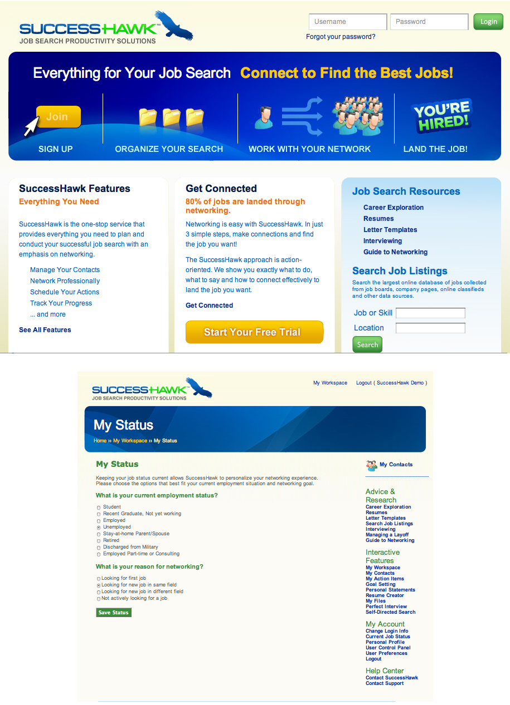

2.7 Chapter Review and Exercises
The six-step job search process provides a constant structure that works for a variety of life situations, including students looking for an internship or full-time job, career changers, people relocating for work, or people coming back to work after unemployment or a leave of absence. The steps are designed to give you a framework to follow and keep the job search process from becoming overwhelming. But the framework is not fixed, so you should expect to revisit the steps as needed to refine and adjust your search along the way.
In addition to the six steps of the job search, you need to have a foundation in place for job search success, including confidence you can get a job, strong communication skills, poise and professional presence, and the physical resources to support your search. You also should be aware of trends in the job market, including 24/7 communication capability that encourages people to overwork, an entrepreneurial approach to the job search that translates the business techniques of branding, marketing, and sales to the individual, and the multigenerational workplace. We have four generations active in the workplace, so the probability of dealing with someone much older or younger than you is significant. Do not assume that people have the same expectations and behaviors as you, and focus instead on building rapport individual by individual.
Chapter Takeaways
- The six steps of the job search are sequential because one step leads into the next.
- It is helpful to follow the sequence so you are not overwhelmed by doing everything at once and so you can build a progression.
- The six steps of the job search are concurrent because each step influences the others.
- It is helpful to allow the six steps to overlap so you can use the information and feedback from each step to strengthen and refine the others.
- The six-step process assumes you have some fundamental skills and resources in place, including confidence, communication skills, poise, and physical resources.
- A confident job seeker knows he or she will get a job.
- A confident job seeker is excited at the prospect of working and getting a job he or she wants.
- You can build and maintain confidence by surrounding yourself with positive influences.
- Communication skills, including written, verbal, presentation, and listening skills, are required throughout the job search.
- All employers consider communication skills when they evaluate candidates.
- Some fields are communication focused, so the general communication during the job search serves as a proxy for your job skills.
- Some fields build in different communication hurdles, such as presentations, directly into the job search process.
- You can improve your communication skills by focusing on them now and practicing good communication habits.
- Poise refers to professional dress, carriage, appropriate body language, and nonverbal communication skills. Poise is critical to the job search.
- Good poise complements and supports the other good job search fundamentals, while lack of poise detracts from them.
- Prepare and practice now to incorporate poise into your regular behavior.
- Your job search requires time, space, and money resources.
- You need to allocate these resources to your search and decide on the trade-offs necessary to spend your time, space, and money on your search, as opposed to other objectives.
- Line up your resources before your job search so that you create an environment that supports your job search.
- The current job market is characterized by 24/7 activity, increased entrepreneurship, and a multigenerational workforce.
- Savvy job seekers can incorporate these trends into their job search to increase their value over the competition.
Chapter Review
- What are the six steps to the job search, and why are they sequenced in that order?
- When should the six steps of the job search overlap or be taken out of the original order?
- What are the four fundamental prerequisites to your job search?
- Why is confidence required in the job search?
- What communication skills are important to the job search? In what cases might communication skills be more important to some job seekers than others?
- What is poise, and why does it matter in the job search?
- What resources should you line up before you start your job search?
- What are three emerging trends of today’s job search? Why are they important to your search?
SuccessHawk: Getting Started
Go to http://www.successhawk.com and click on “Log In.” You will then be asked to sign up.
After enrolling, your first step is to complete “My Account: Current Job Status.” This action sets algorithms that activate the updating feature in SuccessHawk’s Contact Manager.

Take a moment to see the resources SuccessHawk provides and how to navigate the site. As with any new software, SuccessHawk may seem complicated at first, but with a little practice, you will find it easy to use.